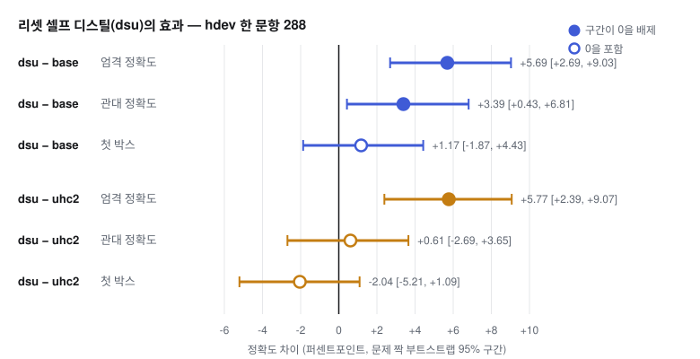
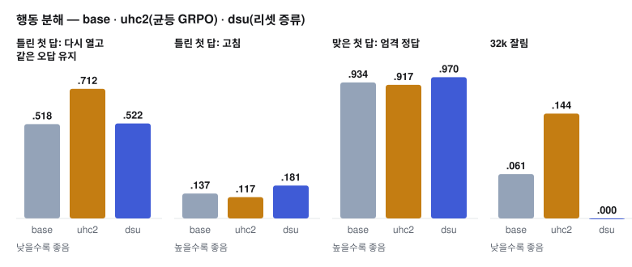

PRELIMINARY · single seedQwen3-4B-Instruct-2507hdev 한 문항 · 288문제 · 32k
한 줄 요약. 균등 GRPO에 «이전 풀이를 가린 자기 자신»을 교사로 하는 말 단위 증류를 더한 팔(dsu)이
base 대비 엄격 정확도 +5.69pp [+2.69, +9.03], 관대 정확도 +3.39pp [+0.43, +6.81]을 냈다.
cd9에서 신뢰구간이 0을 배제한 학습 이득은 이 팔이 처음이다. 기전은 의도한 방향이다 — 틀린 첫 답을 다시 열고도
같은 오답에 머무는 비율이 .712 → .522로 base 수준까지 돌아왔고, 고침은 .181로 올랐다.
단 씨앗 하나의 결과이며, 씨앗 3은 맞은 첫 답이 깨져 학습 중 안전 장치로 중단됐다.
정정 (2026-10-07)
이 항목의 «첫 양성» 결론은 이후 기록으로 수정됐다. dsu의 엄격 정확도 이득은 대부분 «잘림 0» 효과였고(균등 대비 관대 +0.61, 구간이 0 포함),
증류 팔은 3개 모두 학습 후반에 맞은 첫 답을 깨뜨렸다(dsu 씨앗 3·4 중단). 현행 구성은 KL 끈을 더한 «리셋+KL»이다.
후속 결과 보기 →
방법
풀이를 가린 «새 눈»을 교사로 삼는다
이전 열흘의 결론은 한 줄이었다. 모델은 자기 오답이 문맥에 있으면 그 답에 끌려간다(닻, anchoring).
문맥 안에서 두 번째 답이 맞은 경우가 0/1,248이었고, 풀이를 가리고 새로 풀면 고침이 약 3배(.353 대 .121)로 뛴다.
dsu는 이 «새 눈»의 행동을 같은 시퀀스 안의 되짚기 구간으로 끌어오는 학습이다.
구성
내용
바탕
행 전체에 균등한 GRPO 결과 보상. 가지치기 없음.
교사
얼린 base. 문제만 보고 앞선 풀이와 «이전 답은 X» 를 보지 못한다. 정답지(gold) 없음.
학생
현재 정책. 앞선 풀이를 문맥에 둔 채 되짚기 구간을 쓴다.
증류 신호
말 단위 신호 d(PMI 계열 내부 신호)에 β·clip(d, ±2), β = 0.5. 틀린 첫 답 행의 되짚기 구간에 적용.
보고 제약
교사는 «되짚는 말이 없는 재풀이»다. 따라서 이 결과는 «검산 말버릇의 강화»가 아니라
«정박 해소의 단일 패스 내재화»로 보고한다.
결과
엄격·관대 모두 base 위, 균등 GRPO(uhc2)보다 엄격 정확도가 위

hdev 한 문항 288문제, 32k 토큰, 문제 짝 부트스트랩 2,000회. 엄격 = 32k에서 잘리면 오답. 채워진 점 = 구간이 0을 배제.
팔
관대
엄격
첫 박스
잘림
토큰
base
—
.598
.588
.061
6,536
uhc2 (균등)
.648
.597
.620
.144
9,927
dsu (균등 + 증류)
.6545
.6545
.600
0
8,893
base의 관대 정확도는 원장에 절대값 없이 차이(dsu − base +3.39)로만 기록돼 있어 비웠다.
출처: docs/RESULTS_cd9.md «10-04 11:4x».
예상 밖의 소득
32k까지 이어지던 무한 반복이 사라졌다(잘림 0, 최대 24,814 말). 같은 답을 되풀이하는 고리도
«앞 풀이에 끌려감»의 한 형태였을 가능성이 있다.
기전
닻이 풀렸다: 같은 오답 유지 ↓, 고침 ↑, 맞은 답은 지킴

hdev 288문제. «다시 엶» = 첫 박스 뒤 200토큰 초과 이어쓰기.
dsu − uhc2 짝비교(195문제): 같은 오답 유지 −.172 [−.231, −.113], 고침 +.060 [+.011, +.107].
probe(k16)의 고침|틀림은 .320(uhc2 .204)이다. 맞은 첫 답은 엄격 .970으로 오히려 안전하다(base .934).
남은 의도 결함: «언제 다시 볼지»
다시 엶|틀림 .858, 다시 엶|맞음 .802, 비 1.07. base는 .747, .627, 1.19였다.
되짚기 질은 최고(고침|다시 엶 .211)지만 선택성은 약해졌다 — 맞은 답도 거의 같은 빈도로 다시 연다.
판정
수정 52 / 52c 사전등록 기준: 통과
기준
결과
정확도 비열등 (dsu − uhc2 관대)
+0.61 [−2.69, +3.65] ✓
기전: 같은 오답 ↓, 고침 ↑ (둘 다 하한 > 0)
✓
probe 고침 ↑
✓ (점추정 +.116, 짝 CI 미계산)
맞은 첫 답 엄격 ≥ 짝 − 1pp
.970 대 .917 ✓
잘림 ≤ 짝 + .05, 토큰
0 대 .144, 0.9× ✓
L5 첫 박스 관문 (fbgate)
−1.27 [−2.38, −0.16] 통과
한계
씨앗 3은 중단됐다 — 재현 판정은 씨앗 4
dsu 씨앗 3: 스텝 10 파괴 가드 중단 (rc 75)
맞은 첫 답 행의 깨짐(break_live)이 최근 3스텝 평균 .081로 기준 .0777(= 기준선 .0389의 2배)을 넘었다.
스텝 10 한 번에 .225로 급등했고, 문제 해석 변경·같은 답 반복·18k자 재풀이가 원인 사례였다.
토큰 957 → 3,676, 잘림 .03 → .13으로 커지는 중이었다. 씨앗 2(위 결과)는 시험에서 번짐이 없었으므로 씨앗 간 변동이다.
규칙: β·관문의 사후 조정 없음. 씨앗 4(hc2_train_dsu_s4)도 가드 중단이면 «증류의 맞은 답 번짐» 확정으로 보고 맞은 첫 답 보호를 둔 증류를 설계한다.
절제 팔: β .25, 씨앗 3(hc2_train_dsu025_s3)을 새 팔로 큐에 추가 — β를 사후 교체한 것이 아니다.
CH(문맥 대조) 비교: CH + 상한 4(chac4hc2)는 학습 중 반복 .522/.554로 loopcheck에서 탈락했다.
표본: 문제 288개, 단일 씨앗, 학습 시험지 hdev(DeepScaleR에서 겹침 제외). AIME/HMMT 전이는 아직 측정 전이다.
선행 연구
새로움은 «낮음~중간» — 대조 팔이 필요하다
원장의 조사(arXiv 초록 직접 확인) 기준 가장 가까운 선행은 Contextual Drag(2602.04288: 문맥 속 실패 시도가 같은 오류를 반복시킴,
처방 «틀린 초안이면 처음부터 다시»의 fallback SFT는 맞은 초안 성능을 깎는 tradeoff — 씨앗 3의 번짐과 같은 현상),
Blind Resampling(2607.26117), Self-conditioning(2509.09677), OP²SD(2608.09228)이다.
남는 차이는 «자기 이전 오답 풀이를 지운 얼린 선생님의 온폴리시 말 단위 증류를, 같은 시퀀스의 되짚기 구간에서 GRPO와 결합»하는 부분이다.
프레이밍은 «contextual drag에 대한 온폴리시 RL 해법 — tradeoff를 깨는가».
심사 전 필요한 대조
«그냥 다시 풀기» 위약 (OP²SD 지적: 무관 문제 맥락만으로도 효과가 날 수 있음)
얼린 base 교사 대 stop-grad 현재 모델 교사
Contextual Drag fallback SFT, SRPO/SDPO, GRPO 단독과의 비교